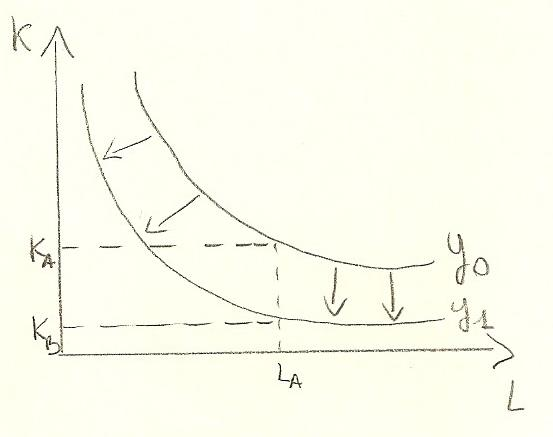

Torna alla pagina di Economia del Cambiamento Tecnologico
:: Economia del Cambiamento Tecnologico ::
Lezione 28/10/2008
Partiamo da alcune ipotesi iniziali:
Rispondiamo ora ad alcune domande relative al progresso tecnico:
Cosa si intende per progresso tecnico?
Shumpeter individua 3 tipologie:
La tipologia di un'attività svolta da un'impresa fa si che una data innovazione possa essere di prodotto o di processo
Quali effetti produce il progresso tecnico?
Il progresso modifica la produttività dei fattori produttivi incrementandoli, quindi incrementa anche il prodotto medio e il prodotto marginale di K e L
Come si definisce graficamente?
Il progresso tecnico causa:
Per la rappresentazione grafica usiamo:
Vediamo nel dettaglio il breve e il lungo periodo:
Breve periodo:
Se nel processo produttivo si introduce innovazione questo si presenta come una nuova funzione di produzione traslata e le medesime combinazioni produttive di K(dato) e L consentono di realizzare maggiori livelli di produzione
Lungo periodo:

La stessa quantità prodotta, come si vede dal grafico, la si realizza anche con meno capitale.
Quindi si parte da una situazione rappresentata nel punto A: la tecnologia disponibile consente di produrre un modo efficiente Y0 in output combinando ad esempio KA ed LA unità di fattori produttivi.
Se si introduce il progresso tecnico la produttività dei fattori aumenta e questo consente di ottenere la medesima quantità di output Y0 impiegando quantità minori dei medesimi fattori K e L.
Tipologie di progresso tecnico
Hicks(1926) distingue 3 diverse tipologie di progresso tecnico:
1. progresso neutrale
Aumenta nella medesima misura sia il PMa del L sia il PMa del K.
| PMaL |
SMST(K,L) = |------|
| PMaK |
In questo modo l'isoclina non cambia e gli isoquanti si spostano lungo essa.
Nei punti A, B, C, l'inclinazione dell'isoquanto a cui corrisponde un livello di output Y0 costante rimane invariata.
2. progresso ad utilizzazione di K
In questa ipotesi si prende in considerazione il fatto che uno solo dei fattori vari, ad esempio il K, incrementandosi; perciò PMaK aumenta. Se succede questo il risultato dato dalla formula della SMTS(K,L) diminuisce.
Cosa succede se il risultato diminuisce? Piochè aumenta PMaK, quindi il denominatore del SMST(K,L), allora l'inclinazione dell'isoquanto Y0 nel punto di intersezione con l'isoclina diminuisce.
3. progresso ad utilizzazione di L
Questo caso è uguale al precedente con la sola differenza che ad aumentare è il L.
[NOTA:
I principali economisti classici sono, come abbiamo già visto:
Essi riassumono le nozioni acquisite dai predecessori. In particolare parleremo di Ricardo, che riprende:
- il valore aggiunto: cioè l'indicatore di nuova ricchezza prodotta. In questo periodo c'è la presa di coscienza del fatto che la ricchezza del mondo si può produrre e che essa viene prodotto soprattutto dalle industrie e dall'agricoltura
- circolarità della produzione: cioè che essa è composta di 3 fasi: produzione, scambio, consumo
Secondo i pensatori dell'epoca la società era ripartita in 3 classi sociali, ciascuna con il proprio ruolo:
Ricardo studia l'economia attraverso vari modelli. Nella prossima lezione ne vedremo uno.